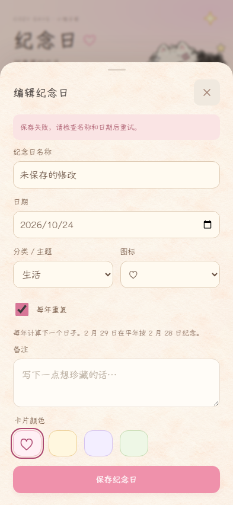

产品源码30bfaa033ad055cd15b3524bf2779e7617225507：两构建、纪念日42、原swipe/audit/font17通过。实际截图构建b4fb7727a78586acbe4c9d0536fe6406c6da5f60仅加强取证helper，产品JS/CSS构建文件名保持一致；两构建通过。最终HEAD完整CI与独立复审由总控继续。
最新零容差像素检查非全零：360有3/266400变化像素，393有16/334836，最大通道差均3；430为0/400760。差异位于计数圆角与小贴纸边缘。实测几何、图像几何及素材字节对照见判据，全部坐标/颜色见像素记录。判断可能为栅格边缘微差，不能把判断当作像素相同或放宽容差。
首轮360缺图导致62407像素变化，原图与数据已完整归档；首轮缺图baseline / 首轮candidate。09较早helper条件下三尺寸0仅为历史结果，不冒称最新全0。最新helper在初始导航与reload后等待资源，要求img非data且decode成功，并解码CSS外链背景。最新来源/哈希。
固定2026-10-23 12:00 Asia/Shanghai、悠哉字体、scale1、seed100/101/102。Android真机未验收；未发布APK。原M5来源保留。

两测试证明失败后Escape、关闭按钮、遮罩均可关闭，包括关闭动画期间才开始写入的反向竞态。截图使用测试运行系统日期。